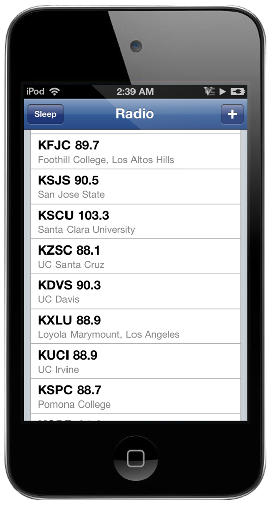
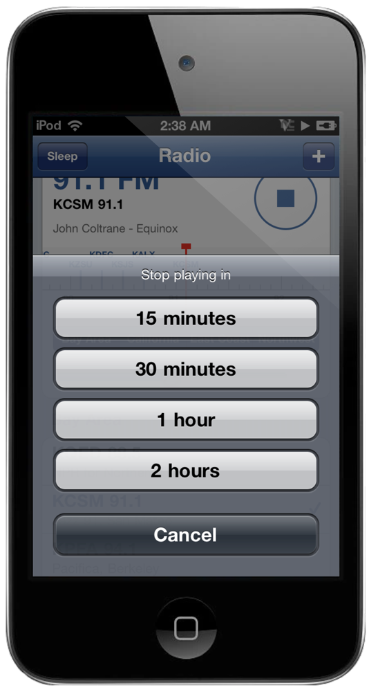

Turn the dial.
Forty stations that still stream. A tuner you can drag. The song on the display.

Drag the band and the needle settles on the nearest station and starts it. Every station sits at its real frequency: KQED at 88.5, KALX at 90.7, WPRB at 103.3. Four bands: Bay Area, California, East Coast, Northwest.

Berkeley, Stanford, Foothill, San Jose State and Santa Clara. Princeton, Rutgers, Columbia, NYU, Fordham, Harvard, MIT, Brown, Penn, Chicago, Chapel Hill and Georgia Tech. Plus KCSM jazz, KPFA, KEXP, KCRW, WFMU, Radio Paradise and six SomaFM channels from San Francisco. Add any Icecast or Shoutcast address of your own.

Lock the iPod and it keeps going, with the station on the lock screen and the headphone clicker to pause or skip. A sleep timer for 15 minutes to two hours. The song title comes straight from the stream, the way Icecast servers have sent it since the nineties.